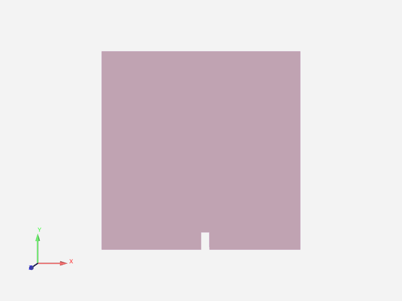
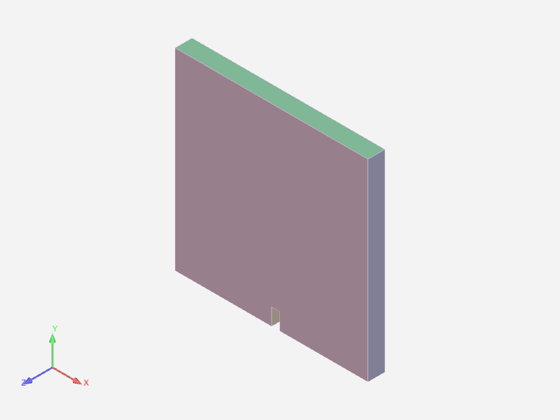
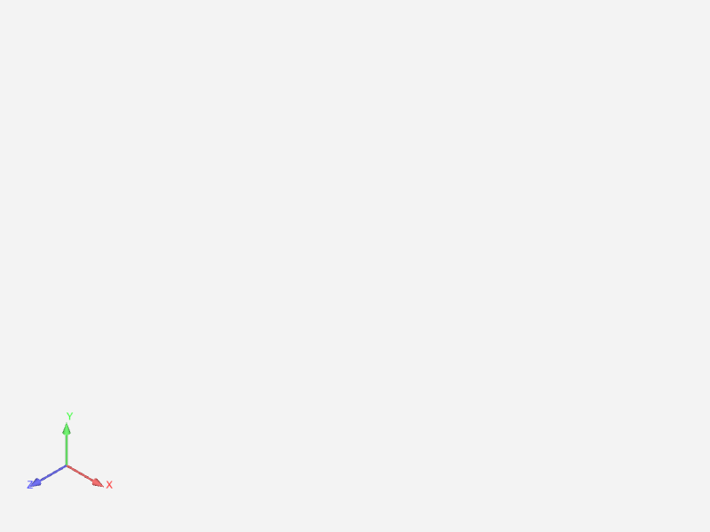
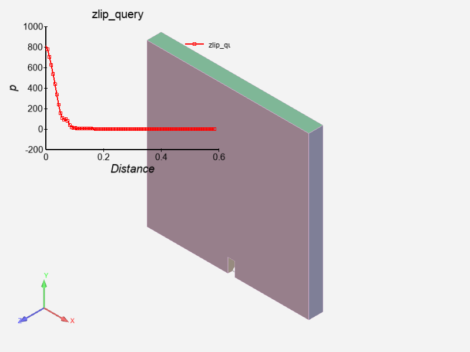
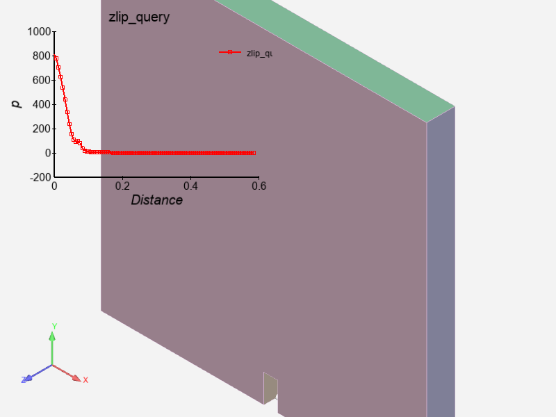
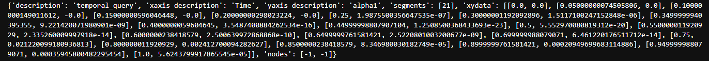
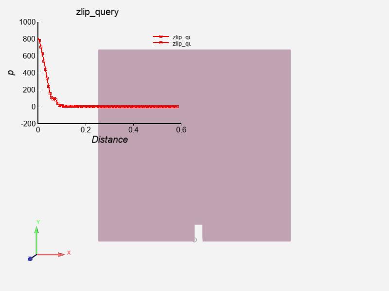

Note
Go to the end to download the full example code
EnSight Utilities#
The PyEnSight utils modules have been designed to expose standard
postprocessing operations via simplified APIs. This example shows how to
use the utils to easily perform specific operations.
Start an EnSight session#
Launch and connect to an instance of EnSight. This example uses a local EnSight installation.
from ansys.pyensight.core import LocalLauncher
from ansys.pyensight.core.enscontext import EnsContext
session = LocalLauncher().start()
Load the data#
Use a remote session to load a simple time-varying dataset of waterflow over a break.
session.load_example("waterbreak.ens")
session.show("image", width=800, height=600)
Load the utils modules#
The utils modules are available as instances of ensight.utils. To
provide a simple use case, this example casts them into new variables
with the same names.
parts = session.ensight.utils.parts
views = session.ensight.utils.views
query = session.ensight.utils.query
Capture a context of the current state#
Use the capture_context
method to save an in-memory context, which is retrieved later in this example.
Also save the context to a file for use in a future PyEnSight session.
init_state = session.capture_context()
init_state.save("init_state.ctxz")
Change view direction and restore an in-memory context#
Save an isometric view along the direction vector (1,1,1) and a new in-memory
context. Save the view, naming it isometric. Use the
select_parts_by_tag
method to select all parts. (All parts are returned because no tags have been supplied
and because the dataset has no metadata for the parts).
When no tags are supplied, all parts are selected.
All parts are hidden.
Restore the state, showing the isometric view once again.
views.set_view_direction(1, 1, 1, name="isometric")
iso_state = session.capture_context()
session.show("image", width=800, height=600)
# Because no tags are supplied, all parts are selected
# Hide the parts.
parts.select_parts_by_tag().set_attr("VISIBLE", False)
# Restore the state, showing the isometric view once again.
session.show("image", width=800, height=600)
session.restore_context(iso_state)
session.show("image", width=800, height=600)
Create scoped name#
A scoped name provides for easily using EnSight submodules to generate distance queries. PyEnSight supports the generation of context managers for the PyEnSight modules. Its context manager features, along with the context manager features in Python, can simplify the workflow.
This code generates a query along a 1D part on the fly. It uses the Parts class to
select the parent part and the
select_parts_by_dimension
method to select all 3D parts. Lastly, it saves a context for later use.
The rendering view should look like this:
sn = session.ensight.utils.support.scoped_name
zclip_state = None
with sn(session.ensight) as ensight, sn(session.ensight.objs.core) as core:
clip_default = core.DEFAULTPARTS[ensight.PART_CLIP_PLANE]
clip = clip_default.createpart(name="XClip", sources=parts.select_parts_by_dimension(3))[0]
attrs = []
attrs.append(["MESHPLANE", 2]) # Z axis
attrs.append(["TOOL", 9]) # XYZ Tool
attrs.append(["VALUE", 0.55]) # Z value
zclip = clip_default.createpart(name="ZClip", sources=clip)[0]
query.create_distance(
"zlip_query", query.DISTANCE_PART1D, [zclip], core.VARIABLES["p"][0], new_plotter=True
)
zclip_state = session.capture_context()
session.show("image", width=800, height=600)
Restore a view#
This code chances the model orientation, position, and zoom. It then restores the isometric view. While restoring a context restores the orientation, position, zoom level, and the objects available at the time that the context was saved, restoring a view only restores the orientation and position.
The rendering view should look like this:
session.ensight.view_transf.rotate(-66.5934067, 1.71428561, 0)
session.ensight.view_transf.rotate(18.0219765, -31.6363659, 0)
session.ensight.view_transf.rotate(-4.83516455, 9.5064888, 0)
session.ensight.view_transf.zoom(0.740957975)
session.ensight.view_transf.zoom(0.792766333)
session.ensight.view_transf.translate(0.0719177574, 0.0678303316, 0)
session.ensight.view_transf.rotate(4.83516455, 3.42857122, 0)
views.restore_view("isometric")
session.show("image", width=800, height=600)
Create a temporal query#
This code restores the distance query context and then generates a temporal
query. This query is applied to a specific XYZ point, querying the
"alpha1" variable. The XYZ point is set to the model centroid and computed
via the Views class. The data generated is then printed.
The value returned should look like this:
session.restore_context(zclip_state)
temp_query = query.create_temporal(
"temporal_query",
query.TEMPORAL_XYZ,
parts.select_parts_by_dimension(3),
"alpha1",
xyz=views.compute_model_centroid(),
)
print(temp_query.QUERY_DATA)
Restore a context from disk#
This code shows how to restore a context previously saved on disk. Because PyEnSight context files do not store the location of the dataset by default, you must load the dataset before restoring the context.
The rendering view should look like this.
ctx = EnsContext()
ctx.load("init_state.ctxz")
session.restore_context(ctx)
session.show("image", width=800, height=600)
# sphinx_gallery_thumbnail_path = '_static/02_utils_3.png'
Total running time of the script: ( 0 minutes 0.000 seconds)